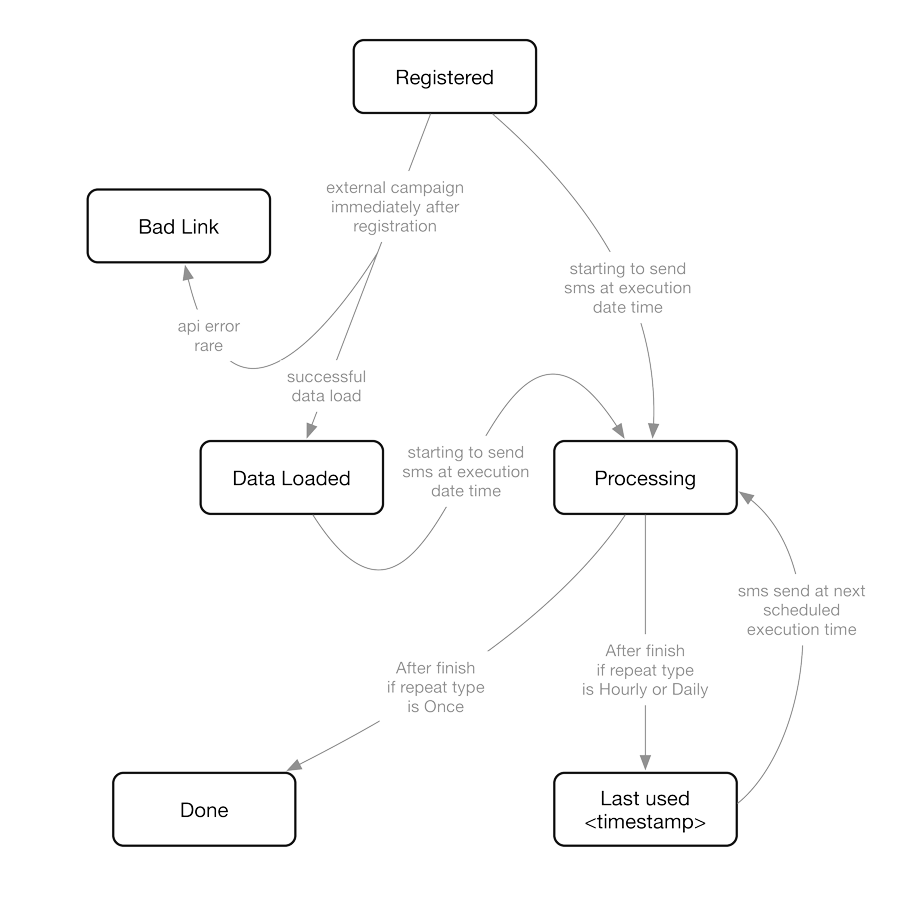

# The scheduling sheet
The scheduling sheet is critical to the system. Each record in this sheet describes a single job.
Each of these records is divided into two parts
### User editable section
1. **Repeat:** Can have any of the following values
- _Once:_ The campaign will be run exactly once at the given date (_Start Date_) and time (_Hour_ and _Minute_)
- _Daily:_ The campaign will be run every day at the given time, starting from the given date.
- _Hourly:_ The campaign will be run every _n_ hours (given in the Hour field) at the given minute. Again, the campaigns will only start once _Start Date_ has reached.
2. **Campaign:** This describes the exact campaign to be run.
- _**external:**_ This value represents the records input using the web-interface. These records must not be
tampered with. Most of the other possible values will soon be deprecated in favour of this value.
3. **Start Date:** The date in _mm/dd/yyyy_ format. In case of _Once_ campaign, this is the exact date on which the campaign will be run. In other cases
the campaign will be executed starting from this date.
4. **Hour:** The hour in 24hour format, part of the execution time. In case of _Hourly_ repeat mode, this field takes special meaning as _every **n** hours_
5. **Minute:** The minute of the hour
6. **English:** The sms content for english messages.
7. **Arabic:** The sms content for arabic messages.
### System section
8. **External Link:** Created only when _external_ campaign is used. This gives the link for the data parameters to the system. DO NOT MODIFY at any cost.
Note: Future versions may do away with the link and replace it with an identification number.
9. **Status:** Server side status. Can be manipulated by the user under specific situations. Read the section on _Status_ for more details.
10. **ID:** Unique id given by the server for the specific job.
11. **Data Link:** Created only in the _external_ campaign setting. The link provided will take you to a page where you can download the computed data and re-upload
the updated file in case you need to restrict or add targets.
# Server Status
The _Status_ field in the scheduling sheet describes the current status of the given job. The state machin used by the system is given
below.

The system also supports the use of the **Cancel** state which needs to be entered by the user. This state effectively cancels that job before it can execute sending sms.
### Note:
- The system uses a cron job to load data from the sheet in intervals of 1 minute. Attempting to change the Server status to Cancel may not work in rare chances when your
timing is wrong against the cron. It is therefore advised to wait a few seconds after modifying the status to check whether the server has changed it back or not. If it has, simply
modify the status again.